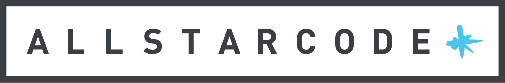
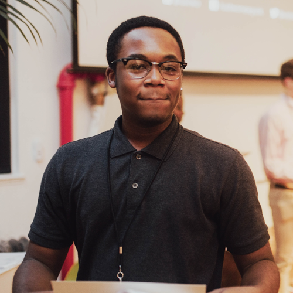
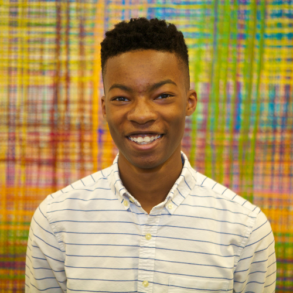

Toggle navigation

Summer Intensive
Apply
Eligibility
All Star Stories
FAQ
Contact
Main Site

Nate Antoine
2016 All Star
Read Nate's Story
Devon Howell
2014 All Star
Read Devon's Story
Isiah Rosa
2015 All Star
Read Isiah's Story
Shuh Islam
2016 All Star
Read Shuh's Story
Jared Foxhall
2016 All Star
Read Jared's Story

Djassi Julien
2014 All Star
Read Djassi's Story